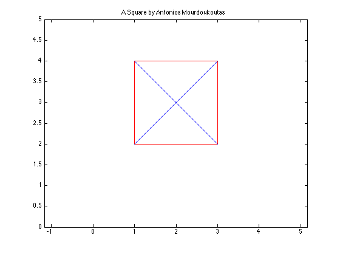

%MATlab 3.5 %Antonios Mourdoukoutas syms x x=[1 3]; y=[2 2]; x3=[3 1]; y3=[4 4]; x4=[1 1]; y4=[2 4]; x5=[3 3]; y5=[2 4]; plot (x,y, 'r') hold on plot (x3,y3, 'r') hold on plot (x4,y4, 'r') hold on plot (x5,y5, 'r') hold on x1= [1 3]; y1=[4 2]; plot (x1, y1, '-') hold on x2= [1 3]; y2=[2 4]; plot (x2, y2, '-') hold on axis([0 5 0 5]) axis equal title(['A Square by Antonios Mourdoukoutas'])